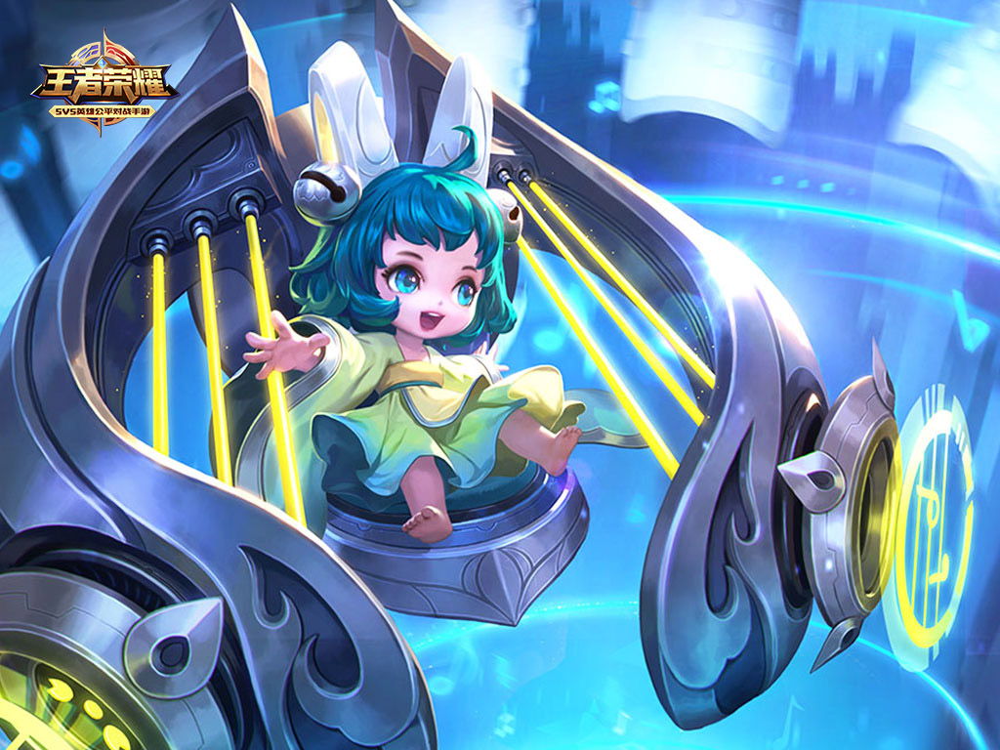
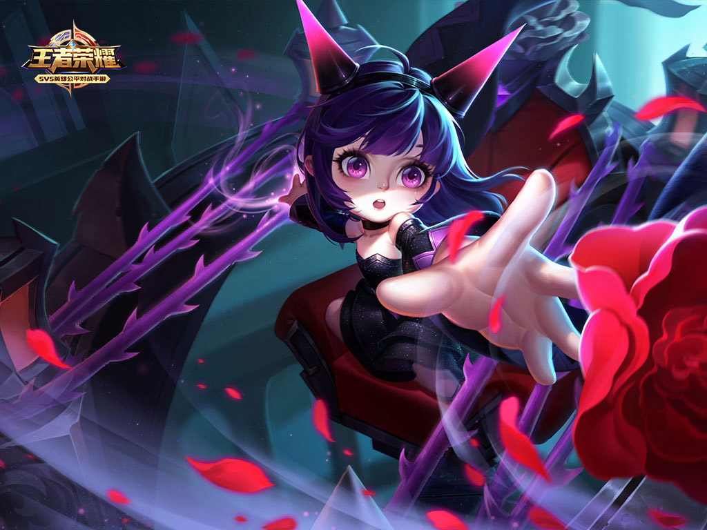

“黑暗的魔神王会降临大陆，唯有美少女的琴音挥洒希望与胜利。”
“人家这样坚信。”
“人家的名字，叫蔡文姬。去世的爹爹，希望文姬做个文雅又可爱的女郎呢。爹爹大名蔡邕，是大陆也顶顶有学问的人。爹爹，到底长得什么样呢？文姬怎么想也想不起来。只有抱着胡笳琴睡觉的时候，好像能梦到爹爹的影子。那么温暖，眼神又是那么忧伤。”
“把这些告诉文姬的人是阿典。阿典很沉默很沉默，可提到爹爹，就停不了嘴：爹爹走过好多好多地方；爹爹的学问，连稷下的老夫子也称赞不已；爹爹的书籍，装满了七八个房间；爹爹发掘了许多珍贵的太古时代的遗物——可惜，留给文姬的唯有这架古怪的胡笳琴。以及，以及，爹爹收养了的阿典。”
“阿典，爹爹到底是怎么去世的呢？每次问这个问题，阿典就会哽咽着露出痛苦的表情，本来就笨嘴笨舌的，更加连话也说不利索了。”
“虽然爹爹已经不在了，但文姬还有义父。义父，可是比爹爹还要伟大的人哟！没错，义父正乃孟德大人是也！啊，孟德大人，那么伟岸，充满了气魄。大人的心愿，也是如此宏大！文姬，文姬最崇拜的人，非孟德大人莫属！”
“文姬终于鼓起勇气，问义父大人。义父大人说，爹爹得到了太古时代的宝物，所以被心怀叵测的好朋友害死。是什么人，会去害爹爹？——是个很有学问的人，他的学问仅次于爹爹，名叫诸葛亮。他醉心于太古魔道的研究，为了争夺魔神王的武器而杀害了爹爹。”
“诸葛亮，文姬记住了这个名字。文姬再一次在梦里见到爹爹时，大声问，是他害死了您吗？爹爹，你为什么叹息呢？真的是他吗？”
“于是，文姬做出了重要的决定！文姬不要做个文雅又可爱的女郎，文姬和文姬的胡笳琴，也要为孟德大人，为了讨伐爹爹的仇人，飞舞在战场上！”
“来吧，邪恶的诸葛亮！可怕，爱说谎的大人！可是，诸葛亮尚未现身，那个，那个一言不合就开始飚车的变态是谁呀？自称为诸葛亮的弟子，可那种，用机关熊猫当坐骑的恶劣品味……那种，一脸自恋的讨厌模样……那种，那种……啊啊啊啊，讨厌啦，颜值不够又自说自话的追求者，最！讨！厌！啦！”
“飞舞战场的美少女，大活跃！”
返回顶部 返回首页